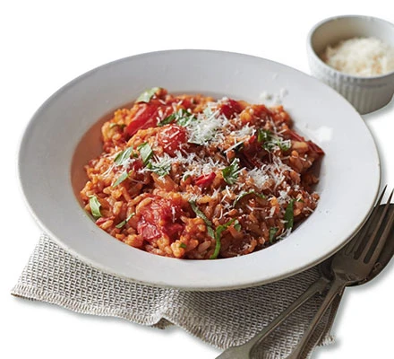

Tomato risotto recipe

Creamy tomato risotto
A budget rice dish flavoured with rosemary, basil and sweet cherry tomatoes. It's healthy, filling and simple to make – an ideal midweek supper
ingredients
- 400g can chopped tomato
- 1l vegetable stock
- knob of butter
- 1 tbsp olive oil
- 1 onion, finely chopped
- 2 garlic cloves, finely chopped
- 1 rosemary sprig, finely chopped
- 250g risotto rice
- 300g cherry tomato, halved
- small pack basil, roughly torn
- 4 tbsp grated parmesan
Now, follow these steps
- Tip the chopped tomatoes and half the stock into a food processor and pulse until smooth. Pour into a saucepan with the remaining stock, bring to a gentle simmer and keep over a low heat.
- Meanwhile, place the butter and oil in the base of a large saucepan and heat gently until the butter has melted. Add the onion and gently cook for 6-8 mins until softened. Stir in the garlic and rosemary, then cook for 1 min more. Add the rice and cook, stirring, for 1 min.
- Start adding the hot stock and tomato mixture about a quarter at a time. Let the risotto cook, stirring often, adding more stock as it is absorbed. After you have added half the stock, add the cherry tomatoes. After 20-25 mins, the rice should be creamy and tender, the cherry tomatoes softened and all of the stock should be used up.
- Cover and leave for 1 min, then stir in the basil. Serve sprinkled with Parmesan and a good grinding of black pepper.